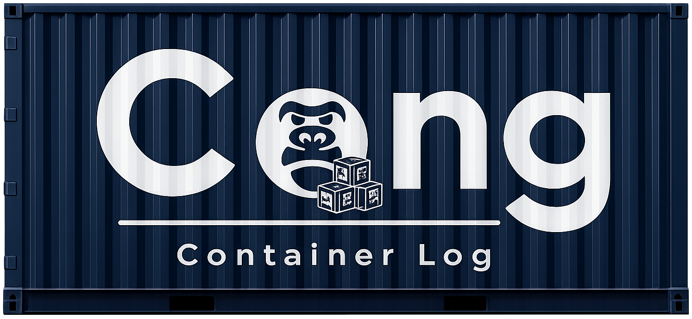

現場ではこう動いている
- コンテナを撮影
- LINEやメールで送信
- 事務所で整理

コンテナ番号ごとに整理。
撮影から共有まで、その場で完結。
コンテナ写真の送信・仕分け・確認業務を減らします。
撮影・送信・仕分け・確認が別々のため、
余計な業務が発生しています。
撮る
送る
探す
この分断によって、 「写真を撮った後の仕事」 が発生しています。
長い入力は現場で使われない
誰でもすぐ使える必要がある
スマホ中心で完結したい
コンテナ番号ごとに管理
・搬入
・シール
・損傷
・搬出
をタグで記録
写真を撮る業務は変わりません。
その後に発生する業務を減らします。
現場で撮った写真を
LINEやメールで送る手間を減らします。
コンテナ番号ごとに整理されるため、
事務所での仕分け作業を減らします。
必要な写真が揃っているか、
管理者がすぐ確認できます。
撮る → 送る → 仕分ける
現場は送信、
事務所は仕分け。
写真の後処理が発生します。
撮る → 保存完了
コンテナ番号ごとに整理。
必要な写真がすぐ見つかります。
販売事業者: あおき業務企画
商品名: Cong - Container Log
販売方法: 本ウェブサイトを通じたご案内・お申し込み